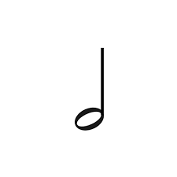
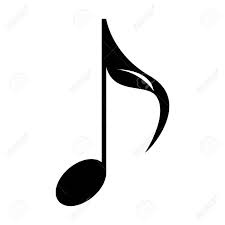
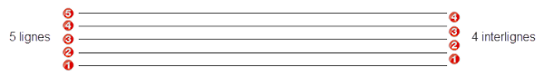
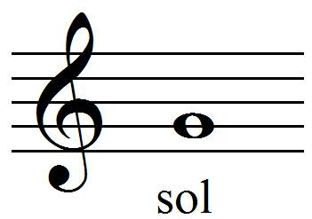
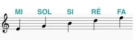

Histoire de la musique?
Il y a très longtemps, bien avant les téléphone et les voitures, les gens ont commencé à faire de la musique.
Au début, ils utilisaient leur voix
et leurs mains pour créer des sons.
Puis, ils ont inventé des instruments comme des tambours
et des flûtes pour jouer différentes mélodies.
À travers les siècles, la musique a continué à évoluer. Les anciennes civilisations comme les Égyptiens et les Grecs ont créé leurs propres styles de musique.
Au Moyen Âge, les chansons étaient souvent chantées dans les églises.
Puis, la musique est devenue de plus en plus complexe avec des compositeurs célèbres comme Mozart et Beethoven. Ils ont écrit de magnifiques symphonies et sonates que les gens écoutent encore aujourd'hui.
.
Maintenant, la musique est partout ! Des chansons joyeuses pour danser aux mélodies douces pour se détendre, il y en a pour tous les goûts. Et peu importe où nous sommes, la musique nous accompagne et nous fait sentir bien.
Qu'est-ce que la musique?
La musique est un ensemble de sons agréables à écouter.
Ces sons peuvent être produits par des instruments de musique comme la guitare, le piano, ou par la voix humaine.
La musique peut être joyeuse, triste, calme, ou énergique. Elle peut raconter des histoires, exprimer des sentiments, ou simplement nous faire danser et chanter.
La musique est un langage universel qui peut être apprécié par tout le monde, peu importe d'où l'on vient ou quelle langue on parle.
Il existe des styles de musique comme le jazz, le rock, et le hip-hop,le classique. Ces styles de musique ont chacun leur propre rythme et leur propre énergie
Les figures de note
Les figures de notes sont des dessins qui représentent la durée des sons que les musiciens jouent. Elles sont comme des petites images qui montrent combien de temps chaque son doit durer.
La plus simple est la ronde. Elle ressemble à un petit cercle et dure quatre battements.
Ensuite, il y a la blanche, qui ressemble à un rond avec un bâton qui sort. Elle dure deux battements.

La noire est comme la blanche, mais avec une petite queue en plus. Elle dure un seul battement.
La croche ressemble à une noire avec un petit drapeau. Elle dure la moitié d'un battement.

En résumé, plus la note est grande, plus elle dure longtemps. Et plus elle a de petits drapeaux, plus elle dure peu de temps.
La portée

La portée en musique est un ensemble de cinq lignes horizontales et quatre espaces entre les lignes(interlignes), où l'on écrit les notes de musique.
Chaque ligne et chaque espace représentent une note différente.
La portée commence généralement avec une clé, qui indique quelle note correspond à quelle ligne ou espace.
Les notes sont écrites sur la portée en fonction de leur hauteur, avec les notes plus basses écrites plus bas sur la portée et les notes plus hautes écrites plus haut sur la portée.
NB: On lit de bas en haut
Les clefs

Les clefs en musique sont des symboles qui indiquent quelle note correspond à quelle ligne ou espace sur la portée.
Il y a trois clefs principales : la clef de sol, la clef de fa et la clef d'ut.
Chaque clef a une forme et une position spécifique sur la portée, ce qui permet de déterminer quelle note est associée à chaque ligne ou espace.
Les clefs sont essentielles pour savoir comment lire les notes de musique sur une portée.
Clef de sol

La clef de sol en musique ressemble à un petit "S" et elle est placée sur la deuxième ligne de la portée musicale.
Elle est également appelée la "clef de sol" parce qu'elle indique que la note sol est située sur cette ligne.
La plupart du temps,
la clef de sol est utilisée pour les instruments qui ont un registre aigu, comme le violon, la flûte ou le piano.
Quand tu vois la clef de sol, cela signifie que la note sol est sur la deuxième ligne et les autres notes sont situées par rapport à cette référence.

Le nom des lignes

Le nom des espaces entre les lignes